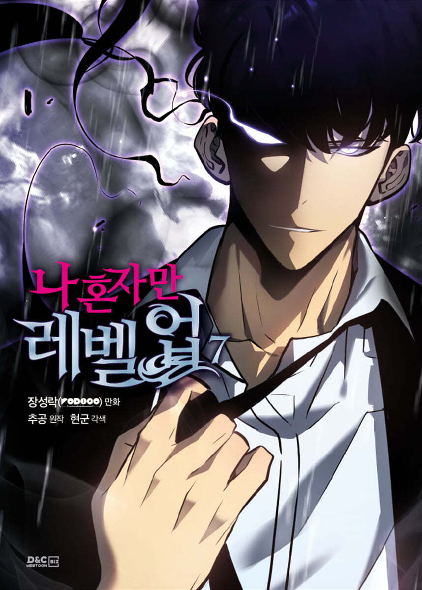

Solo Leveling
Welcome to our webpage about web novel, webtoon and
recent anime Solo Leveling. On this page we will go into the creators
of the online published novel, author Chugong and illustrator Dubu.
We’ll also discuss some of the main characters of the show, describe
some of the story and finally we’ll tell you about former and future
releases.
Solo Leveling was first published on KakaoPage on 25 July, 2016 and a
webtoon followed from 4 March, 2018. The webtoon was illustrated by
Jang Sung-rak or Dubu.
